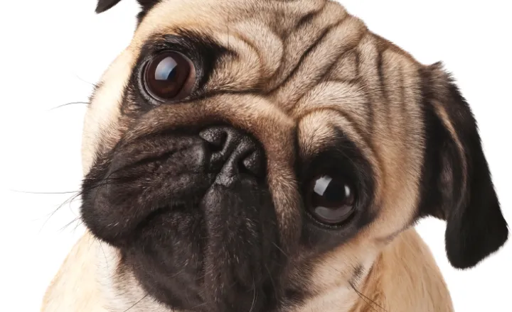

1.svg)


O Pug é uma raça de cachorro conhecida por sua personalidade amigável e expressões faciais engraçadas. Originário da China, o Pug é um ótimo companheiro para famílias e adora brincar.
Esses cães têm um temperamento afetuoso e são ótimos para viver em apartamentos devido ao seu tamanho e energia moderada. Eles são conhecidos por suas rugas adoráveis e pela cauda enrolada.
Se você está pensando em ter um Pug como animal de estimação, saiba que eles adoram a companhia humana e são excelentes para crianças. Eles podem ser sensíveis ao calor, então é importante mantê-los frescos e hidratados.